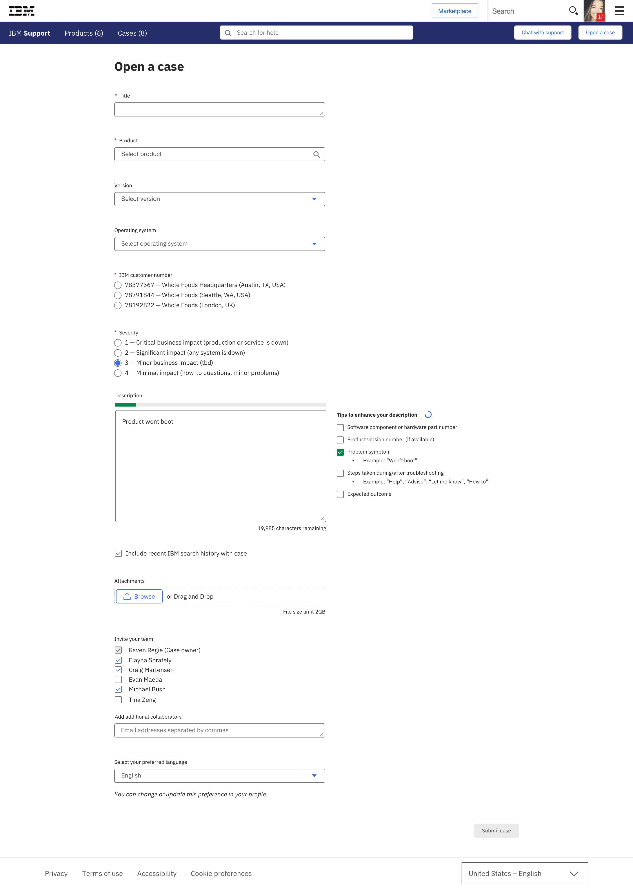
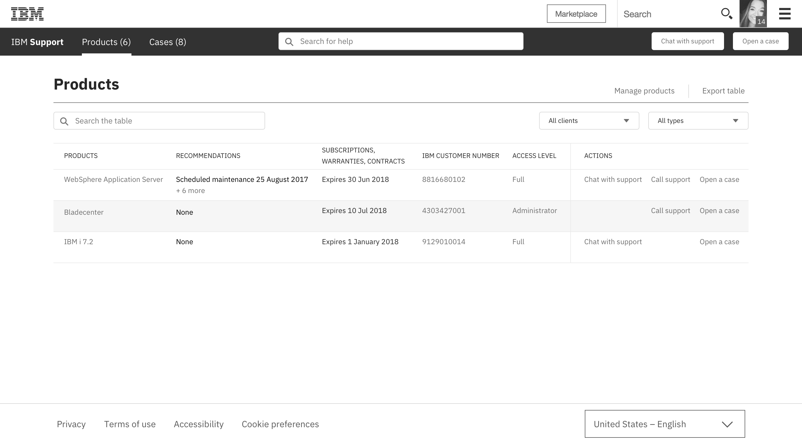
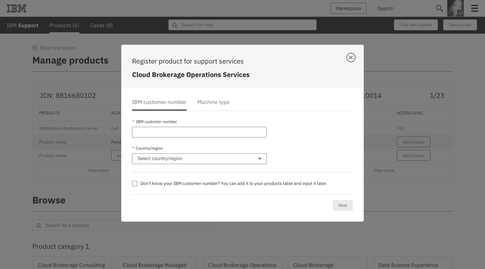
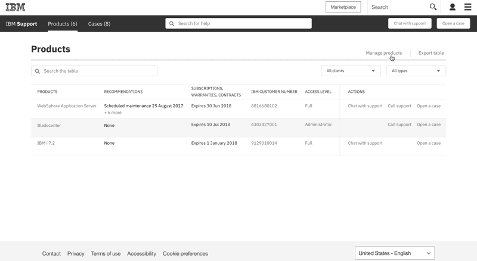

IBM Support Web Platform
IBM Support is the company’s customer service platform serving a wide range of customers working with our hardware, software, and cloud products. Through several software tools, IBM Support connects customers with support agents, product documentation and training, and case management.
Overview
Problem
The customer support experience at IBM today is disjointed and inconsistent across products and support tools. Part of the challenge is that IBM has not been productively (using) data about its customers, and therefore does not surface information relevant, meaningful, and tailored to the people working with IBM products. This has created a confusing and frustrating digital ecosystem that customers struggle to navigate and find what they need.
The underlying question for so many of our users is: why doesn’t IBM know who I am and what products I use?
Vision
This year, IBM set forth to prioritize and transform the current customer support journey across its business units and products. Our team is working to consolidate the various support tools, facilitate stronger relationships between customers and support agents, and provide transparency into cases and product updates.
The first release of the new support platform launched in June and on-boarded a handful of products to start.
Role and team
I am a product designer responsible for leading visual and interaction design across IBM Support. This includes prioritizing business requirements and user insights, prototyping user flows and micro-interactions, maintaining our design system and documenting patterns and styles, and iterating on workflows between our design team and development squad.
On a day-to-day basis, I work closely with my design lead, UX designer, two user researchers, three developers, and my product owner. We are a remote team, which means most of our conversations and collaboration happen over Zoom, Slack, or Github.
Workflow
Ecosystem of personas
Our team is solely focused on the customer experience with IBM Support. A separate work stream focused on the IBM agent experience is happening in parallel.
An example of these personas within a large organization
Introducing the new IBM Support
Home
Our new home page needed to be straight-forward and direct. One of the long-term goals for IBM Support is to improve support content to drive greater self-service. We sought to emphasize search here, as well as provide entry points to the three main places we’ve learned users look for.
Cases
Cases is where users, like the Developer and Systems Admin, spend majority of their time when interacting with Support. Through data, surveys, and sponsor user sessions, we have heard that people want to open cases quickly, connect with the right agent, have direct transparency into the status of their case, and easily see the case events and history.
Cases table
First and foremost, users want to know the case status and if they or the support agent needs to take the next action. However, we learned that a lot of times, case titles will be identical to each other and users rely on supporting information to help them quickly determine differences between cases. For example, one big insight we found from sponsor user sessions is that a lot of people also use an internal tool at their company to track these cases. Their respective tool provides a reference number—like our case numbers—for each case. Users want a way to input this reference number into the case opened on IBM Support so that they can better manage all of their cases.
View an individual case
This view is a closer look into the case, showing details like the description, file attachments, and teammates. Previously there had not been much visibility into cases and it was especially difficult to track what had happened in the case.
A new feature we are introducing is the Case History. Case History is a timeline and record of all case events, such as phone calls with agents, as well as an area for users to leave comments and upload attachments.
A workflow we’re currently working on for a future release is Teaming. We’ve heard from users that they want to be able to include their teammates on cases. For example, if the person opens a case and then later goes on vacation, they want to be able to transfer ownership of that case to a teammate.
Open a new case
In order to connect users to the right support agents, we tried to ensure that the form fields are direct and easy to understand. The biggest feature developers and I are collaborating on with opening cases is incorporating Watson technology into the description box. Essentially, the technology parses the description text to match it against pre-determined criteria so that users get immediate feedback about how productive the information they’re providing will be to the agent. Eventually, we hope to reach a point where we can provide suggested solutions based on their description of the problem so as to eliminate the need to open a case. This approach is an attempt to assist users with self-service of product problems.

Products
We are currently exploring the products area in Support. The two objectives for users here are monitoring and managing products. Users want a snapshot into the state of their company’s products and view into the type of support access they have with IBM. Users also want to easily browse our product catalog. Sometimes this could be because they do not see their company’s product listed in their table, or because they want to explore products their company might want to use.
Monitor

The products listed in the table are ones that their company has purchased from IBM. Users, like the system admin, need to make sure all products are registered and under warranty, and can anticipate potential problems to resolve them before they happen.
Manage
The top section of this page shows the products that a user can access because their company has a contract with IBM. Most users will not directly work with all of these products, which is why they are not listed on the previous products table.

We do not yet have the capabilities in place to surface relevant product information based on the users account. Today, users need to manually add their company’s IBM products using an IBM customer number. The long-term vision is to alleviate this step entirely.
User flow

Platforms we work with
Salesforce
IBM partnered with Salesforce to provide the back-end and front-end architecture. This partnership enables us to create a cohesive experience and interaction between customers and agents on a single platform.
IBM Northstar
Northstar is the internal design system for all web pages launched IBM.com. IBM.com is the home for IBM Support, which meant that prior to the Salesforce partnership, we were required to use the Northstar patterns and components.
Our design system
Northstar was created with marketing pages in mind. This meant that some of the design system patterns and components fell short for product design. Our previous front-end developer and I pitched the idea to our executives to forgo Northstar in favor of the Salesforce Lightning Design System (SLDS). In practice, what that has led to is our team using SLDS to provide the structure for components and base styles, such as spacing units and type scale. However, in order to align with the IBM brand, we style SLDS with IBM colors, icons, and IBM’s new font family, Plex.
A snippet of the Sketch UI kit I created for our design team to share and re-use components, styles, and patterns
 Github wiki page where I have been storing the components from the Sketch UI kit for the development team
Github wiki page where I have been storing the components from the Sketch UI kit for the development team